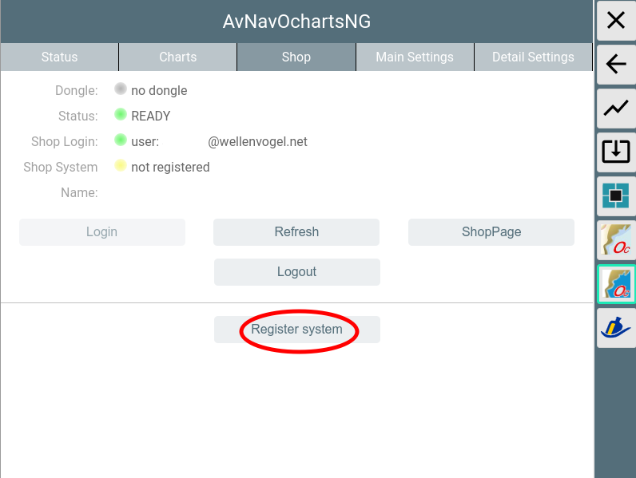
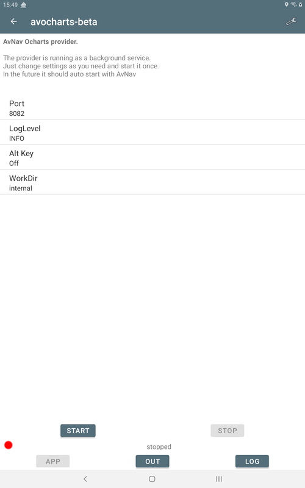
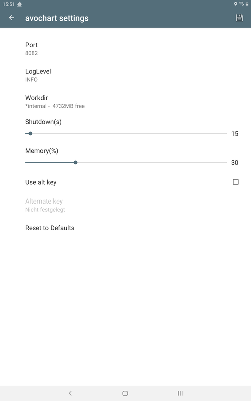
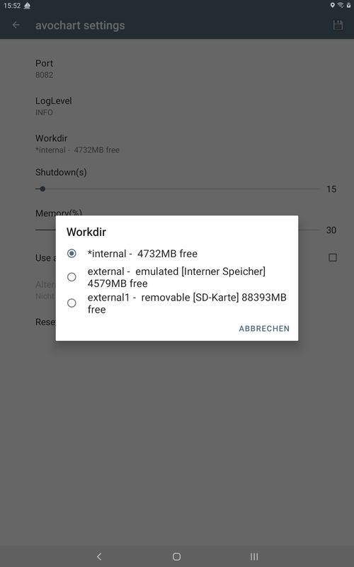
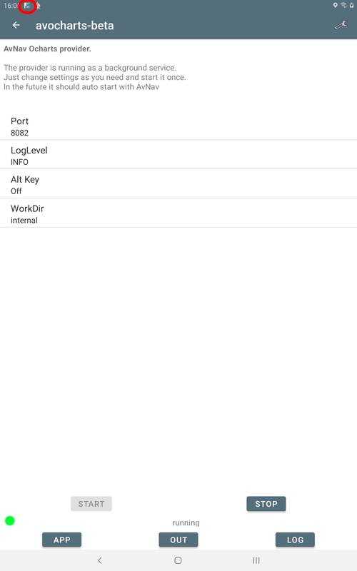
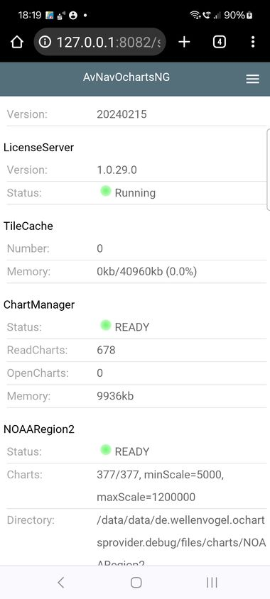

.
.AvNav ochartsng is a new implementation of the AvNav
ocharts plugin.
This implementation has a couple of new features:
The new version has some restrictions:
AvNav is able to handle charts in various raster formats. So far it was unable to handle any commercial charts. The o-charts company supplies charts for various regions of the world for usage in OpenCPN.
After some agreements with o-charts, those charts can now also be used for AvNav (starting with version 2024xxx with this new plugin - see below). At present you can use oeusenc vector-charts .
Additionally the plugin is able to handle free S57 charts (after conversion).
To display those charts in AvNav they must be rendered into raster images. This is handled by a new plugin for AvNav(avnav-ochartsng). The rendering takes place on the fly whenever tiles are to be displayed. A certain amount of rendered chart data (tiles) is kept in memory on the server to serve them fast if you switch between certain zoom levels or if you run multiple displays.
All oeSENC charts handling is performed by the plugin - including
installation (you cannot install them directly via the download page). For this purpose
a dedicated GUI is offered by the plugin. You enter it from the main page
via  (User
Apps) and Ocharts-Provider .
(User
Apps) and Ocharts-Provider .

AvNav ochartsng can handle the o-charts vector charts (oeusenc) as
described in this document.
Additionally it can also handle unencrypted vector charts - like S57
charts available for download for various regions.
To use S57 charts they need to be converted into the OpenCPN format that
AvNav-ochartsng understands.
For details on how to convert charts refer to Chart
Conversions.
Important Hint: If you do not have a dongle from o-charts, your chart license is bound to your system. So in case of any trouble do not set up a new system (by writing an image to an SD card) but instead try to repair the system. If you set up a new system you will lose your license. I will by happy to support in case of trouble - contact e.g. via email.
To be able to buy charts at o-charts you have to create an account at their
site first.
Afterwards you have to register the systems you would like to buy charts
for at the o-charts site.
You have two different ways to do this - named the "online
process " and the "Offline"
process .
The online process requires that your system (the one running the AvNav
server - not necessarily the one running the browser!) is connected to the
internet.
For Android the registration of the system is only possible with the
online process.
This process consists of the following steps:
For updates repeat steps 4, 5 and 6 (only requesting the notification
mail at step 4).
For further chart sets steps 3-6.
For steps 2,3,4 and 5 you need a system with internet connectivity. You
can e.g. use a laptop or an android device.
Important hint for Android: The registration of the system (Steps
1 and 2) cannot be handled using the offline process. You have to use the
online process for those steps. Buying
charts, assigning them, downloading and installing them can be also done
with the offline process.
I created a video to demonstrate the offline process. Additionally here is a short description.
Hint: If the charts are already registered on the same system (for OpenCPN) you can directly continue at step 6 (but not for android - see restrictions above).
Via  -> you enter the GUI of the
plugin, select the "Charts" tab.
-> you enter the GUI of the
plugin, select the "Charts" tab.
Use "Get Fingerprint" to create the fingerprint file. If you are using an o-charts dongle - just select the "Get Fingerprint(Dongle) button". This button will only be visible if a dongle has been detected (dongle line is green).

Choose Download to save the created file on your device.
Enter the o-charts page and upload the fingerprint.

With "Choose File" you select the file stored at step 2. Assign a meaningful name to the new system - this will be part of the mails you will receive later.
Select the desired charts from oeSENC charts.

At 1 you can assign charts to your system (in this screenshot this is not available anymore as the max amount of 2 systems are already assigned). The number of permitted systems has recently been increased to 5. At 2 you request the mail holding the download link (you would do the same for updates - in the screenshot: last version I have downloaded is 21, latest available is 23)

After a short time you will receive a mail containing the download link for your charts. Download the zip file.

In the plugin's GUI select "Upload Zip" to transfer the zip file downloaded in step 5 to AvNav.
There will be a progress bar during upload.

After the upload is completed the zip file will be unpacked. Some initial checks can take some time.
Unless configured otherwise, the charts will be uploaded to /home/pi/avnav/data/ocharts/charts.
If the newly uploaded chart contains updates to an already existing set, the existing set will be deactivated. You may change this later on by using Enable/Disable/Auto. Chart sets not required anymore can be deleted.
Important hint: As the charts will only be available at the o-charts page as long as they are valid, you may want to keep the downloaded zip file at a safe place. AvNav OchartsNG can still upload and use those charts even after their validity period (but you will not receive any updates).
After all charts are successfully read the status should change to green (READY).

If the status turns to "ERROR" (red) you maybe uploaded a zip that was not built for your current system. You can check details in the log file at /home/pi/avnav/data/ocharts/provider.log.
Now the charts are available and can be used.


For using the online process your system (the server that runs AvNav - not necessarily the one that you run your browser on) needs internet connectivity.
It will allow you to register your system, check if it is known in the
ocharts shop, list charts or updates being available for download,
download and install them.
Currently the buying process and the assignments of the charts have to be
done on the o-charts web site. But the GUI will contain a link button to
go there.
The AvNav ochartsng will not store any shop credentials. But as you run
inside a browser you can easily use your browser to store the credentials
(like you do on any other web site).
Security hint: Although the communication with the ocharts shop is secured by SSL the communication between your browser and the AvNav server is not. So when you are using the online process just be sure to work within a secured network (e.g. behind an LTE router or a mobile phone hotspot) - not within a public open Wifi network.

When opening the "shop" tab you will not be logged in and you will see an info whether a dongle is active on your system or not. Via the "ShopPage" button you can directly access the o-charts web page (but better log in first...).
With tapping "Login" you will login to the o-charts shop.

When the shop already knows your current system the "Shop name" will be
shown and the list of available charts/updates that have been assigned to
your system (see OfflineProcess) will be
visible.
If a version in the shop is newer then your local version (or the chart is
not locally available) you can immediately install it.


After downloading the chart will be unpacked and can immediately be used. If it is an update for an existing chart set, the new version will become active but the old one will still be available (similar handling like uploading a chart zip file). On the chart tab you can later on delete the older version if you don't need this any more.
Important hint:
As the charts in the shop will only remain available for download as long
as they are valid (one year) please store the charts additionally at a
safe place. You can either do this from the shop website by requesting the
charts (like in the offline process). Or you can download the chart set
from the "charts" tab (Download button).
If your system is still not known to the shop you are able to register it there.

On linux systems you will be prompted for a system name but on android the system name is fixed and cannot be changed.After you registered your system you can click the "ShopPage" link and start assigning charts to your system. When coming back to the shop tab you need to tap "Refresh" to get the list of charts that have been assigned.
As the o-charts are vector charts you can adjust their look and feel. However some limitations must be considered:
Changing display parameters is done in the plugin GUI( ->),
tab "Main Settings".
->),
tab "Main Settings".

If you change a setting (1) it will be displayed bold. Changes will only
become effective when you click "Update Settings"(2).
When you changed the settings the chart display will be rebuilt. This will
typically cause a small delay with no display at all.
By selecting "Cancel" you can revert your changes. "Defaults" will reset to the built-in defaults. Most parameters are similar to the ones you find at OpenCPN settings.
The following parameters are available.
| Name | Meaning | Default |
| Show Text | show text for chart objects | true |
| Important Text Only | hide less important text | false |
| Light Descriptions | show descriptions for lights | true |
| Show Depths | show soundings | true |
| Show Quality | show extra objects indicating the quality | false |
| Chart Information Objects | show informational objects | true |
| Buoy/Light Labels | show labels for buoys and lights | true |
| National text on chart | show national text | true |
| Show Lights | show lights | true |
| Show Anchor Info | show anchoring information | true |
| Color Scheme | The color scheme to be used for the chart display | DAY_BRIGHT |
| Chart Bounds | Show the chart bounding boxes | true |
| Reduced Detail at Small Scale | reduce details at lower zoom levels | true |
| De-Cluttered Text | improve text positioning | true |
| Display Category | Base, Standard, All, User Standard | Standard |
| Graphics Style | Paper Chart, Simplified | Paper Chart |
| Boundaries | Plain, Symbolized | Plain |
| Colors | 4Color, 2 Color | 4 Color |
| Text Font Size | Scaling for text on charts | 1 (ca. 12px) |
| Soundings Font Size | Scaling for soundings | 1 (ca. 12px) |
| Scale | Base scaling. Higher values for more details on lower zoom levels | 1 |
| UnderZoom | Number of zoom levels to downscale higher resolution chart tiles if no chart tile is available at the requested zoom level. | 4 |
| AreaUnder | If with in the under zoom range still no charts have been found,
just try some lower zoom layers - but only display the areas (land,
depth) - no other information. Be careful when increasing this as this could impact the performance a lot. |
2 |
| OverZoom | Number of zoom levels to upscale a lower resolution chart tile if
is no chart tile is available with better resolution. Hint: Scale, UnderZoom and OverZoom, AreaUnder heavily influence the cost of the rendering process as they determine the number of charts to be processed to generate a single chart tile. Lower values normally mean less charts (i.e. being faster) - but there could be white areas between chart tiles. The defaults should be a good compromise. |
4 |
| Scale Tolerance | When scaling the map or the symbols (symbol scale) all the symbols
have to be rendered on those scaled values. To avoid too much additional symbols you can allow a small tolerance here. |
0.1 |
| Rotation Tolerance | When Objects (symbols, lines, lights... have to be rotated on the map for each different angle a new symbol has to be created. To optimize performance and memory usage we can allow a small tolerance here so that a couple of different angles can use the same rotated symbol (in degrees) | 2 |
| SymbolScale | Scale the display of symbols. Some of the symbols are built from of raster data - so a scale > 2 could already make theme look very ugly. | 1 |
| Depth | Unit for soundings(Meters, Feet, Fathoms) | Meters |
| Shallow Depth | Adjust to your needs | 2 |
| Safety Depth | Adjust to your needs | 3 |
| Deep Depth | Adjust to your needs | 5 |
At the tab "Detail Settings" you can switch on/off particular chart features. Those detail settings will only become effective when using the display category "User Standard".
When you click on the chart a list of features (charts, overlays, AIS-objects and more) around this point is displayed. Selecting the chart from the list opens the chart's Feature Info window.

By clicking "Info" you can view the raw information from the chart.

By clicking the blue chart name you can get some more information about the chart that this object belongs to.

The plugin is available as a debian package.
The packages are part of the official repositories.
For the AvNav Images you can install the package normally with the avnav updater:
If you want to do this from the command line execute:
If you are working on other images you should add the repository from free-x (adapt "bullseye" to your debian release):
Refer to the AvNav package install description.
Alternatively you can download the packages them from the daily builds directory or the release directory.
To use one of those packages just download and install the package (replace the version by the one you want):
You can also download to a PC, transfer by scp/WinScp to the pi and install then.
When you install the new avnav-ochartsng-plugin it will use the port 8083
(which is different from the default port 8082 of the old plugin). Hint:
If you installed a beta before 20250804 this uses port 8082 by default and
you will get some conflict with the existing ocharts plugin. At the end
both will try to use the same port - so at least one of the two will fail
to start.
The old ocharts-plugin can be disabled on the  server/status
page.
server/status
page.
By enabling the "useLegacy" switch in the PluginConfig
of the ochartsng plugin the new plugin will use all the charts that you
installed with the old one.
Running both in parallel should only be done if your system has sufficient RAM (at least 2GB).
On android there is an extra app (avocharts) that will contain the ochartsng.
See AndroidApp below.
You can find all releases and intermediate developer builds (daily builds) at:
20250822 link
Small Fixes and Working Directory selection for Android
20250812
Only Android Store - same content like 20250804 (only new version number).
20250804 link
Initial Release
Using the charts in AvNav with the oesenc-pi plugin has been agreed with
o-charts and therefore is inline with their license conditions.
You have to agree to the license
conditions of o-charts
Especially it is not allowed to copy the charts or use them on other than
the licensed systems.
Access to the charts in AvNav is only possible from within the local net. You can connect at most 5 devices (Clients) at the same time.
For software licenses see the Readme.
Linux only. For Android refer to Android/Settings.
Some of the plugins settings can be changed on the server/status page  at "plugins/system-ochartsng" .
at "plugins/system-ochartsng" .

Those are:
| Name | Meaning | Default |
| port | Http port | 8082 |
| debug | log level for <datadir>/ocharts/provider.log. <datadir> on a raspberry is /home/pi/avnav/data |
1 |
| memPercent | The amount of memory (percent of the system memory) that the
plugin (correctly: the provider process) will use. If this value is
not set (or set to low) the provider will use an internal minimum. This potentially could be rather low - especially when using raster charts. If it is very low the provider must open and close chart files very often and this will slow down it's operation. If you have enough memory (e.g. 2GB) you can increase speed by setting the memory to 1GB . |
50 |
| tileCachekb | KB of memory to be used for the internal tile cache (set to 0 to disable it for some testing) | 40960 |
| useLegacy | Also use the charts that have been installed with the old avnav-ocharts-plugin. By activating this you can disable the old plugin in the settings and just use all the charts you already installed. | off |
AvNav OchartsNG also runs on Android and provides charts for the AvNav
android app.
The Ocharts support is built into a separate Android App - avocharts.
Currently the app is not (yet) available in the google play store as it is still in beta status. So you need to download it from the daily builds directory and install it (allow external sources).

After you started up avocharts for the first time you can adapt some
settings.
When you see this picture the real ocharts provider process is still not
running - it will start up when you tap "start".
Later it will not be necessary to start the
avocharts app by hand - it should normally being started automatically
when AvNav starts up. But directly starting the avocharts app can help to
troubleshoot as you can get access to the output and log of the chart
provider.
Please consider that the auto start will only work for apps of the same
type - i.e. an AvNav release app can only start an avocharts release
app and an AvNav beta app can only start an avocharts beta app.
So when you install the avocharts beta together with the "normal" AvNav
app from the store you need to start avocharts by hand before you can use
the charts in AvNav.
To adapt settings tap on the shown settings or on the settings icon on the upper right.

| Name | Explanation | Default |
| Port | The IP Port the provider process will use. If you get errors when you start the provider and see something like "address already in use" in the output (tapping the out button on the main page) you maybe need to change the port | 8082 |
| LogLevel | 0 - errors, 1- info, 2- debug | 1 |
| WorkDir | Location for storing all data like charts and render settings(new since 20250822) | internal |
| Shutdown | Time (in seconds) the provider will wait for a heartbeat from AvNav before it stops (only active when started by AvNav) | 30 |
| Memory | Allowed Memory usage (%) of the system memory | 50 |
| Use alt key | See below for the hints about Release/Beta Versions | |
| Disk symbol (upper right) | Save your key (See below for the hints about Release/Beta Versions) |
When done with the settings tap the back arrow.
AvOcharts will store all charts, logs and the settings you can configure in Main Settings and Detailled Settings in a storage location on your device (Working Directory). This directory is independent from AvNav's working directory.
You have the following choices:

Depending on the device you can select different locations where your data is stored (refer to the Android doc for some technical background). If your device has an SD card you will see a selection like above:
| Name | Explanation |
| Internal Storage | This is a location in the internal flash memory of your device.
It's completely private and (if your device is not rooted) is not
accessible for other apps like a file manager. The "*" in front of the entry shows that this directory was already used as working directory and contains data. |
| External Storage | This is a storage still being located in the internal flash memory
but treated differently by the Android system (and therefore named
"external - emulated"). Other apps can access this data location. You can choose this location if you would like other apps (like a file manager) to access the data. The path for a file manager would typically be [internal memory]/Android/data/de.wellenvogel.ochartsprovider/files (or [internal memory]/Android/data/de.wellenvogel.avnav.ochartsprovider.beta/files for a beta version) |
| External Storage-1 | This will only be visible if your device has an SD card installed.
Typically you will also see "removable [SD Card]" as explanation. If available this directory really is located on an external SD card. If you plan to use this, just be sure to always have the SD card installed, when you run AvNav (or avocharts). If you remove it while AvNav is running it could crash. Other apps like a file manger can access the data. The location is [SD card]/Android/data/de.wellenvogel.ochartsprovider/files (or [SD card]/Android/data/de.wellenvogel.ochartsprovider.beta/files). |
When you change the WorkDir all your data in the old WorkDir will become invisible to avocharts (although they remain available and you can switch back to the old one at any time).
When avocharts starts up it checks if the selected working directory is
still available (and will prompt you to choose a different one if not).
If you let it autostart from AvNav it will try to fall back to the
internal working directory if the selected directory is not available
(e.g. SD card removed).
For the external directories you can in principle use a file manager to copy data to and from those locations but avocharts is not prepared to detect those data when it is running - so the preferred way is to upload data to those locations directly within the app. But you could e.g. create a zip of the data as a backup. And you can easily access the logs of avocharts.
All the WorkDir directories will be emptied if you deinstall avocharts (or clean it's data).
Important hint: Settings (i.e. the ones in the table above) are not
stored in the WorkDir.
You can now start the chart provider by tapping "START".

When the provider process is up and running you will see the indication in the notification bar. If something goes wrong just try to have a look at the output (tapping "OUT") or the log (tapping "LOG").
Tapping "APP" will open up a browser window with the ochartsng app - the same view like you get from within AvNav.

You now can e.g. register at the ocharts shop (on android this is only possible using the Online Process).
Due to the way that the ocharts license daemon is working you will
normally not be able to use charts that you installed with the release
version within the beta version and vice versa.
To overcome this problem you can export the necessary information from the
app version that you used to assign the charts and import this in the
different version. Hint: You still can only use this on the same android
device!
To export a key tap the disk symbol on the settings screen within the app
and store the file at a safe place. When you later use the alternative
version, select "use alternate key" , tap on the key value and import the
saved key file there.
You can easily check if your app has the correct key by going to the shop
page and log in. When the shop recognizes your current key it will show
the system name - see Online Process.
Please also consider the automatic startup relations between the Beta and Release version.
The charts are provided by an executable that normally serves at port
8082.
Communication with AvNav is handled by an AvNav plugin
on linux and by the avocharts app on Android.
The GUI is a reactjs app that is also provided by the executable. It is integrated into AvNav as a User App.
You will find the complete code at GitHub.
You install into /usr/lib/avnav/plugins/ochartsng. The data directory is /home/pi/avnav/data/ochartsng. You can set some additional parameters for the AvNav plugin by editing avnav_server.xml. Normally this is not necessary at all.
You can separately set the directory for all settings and the charts:
Unencrypted vector charts like S57 charts have to be converted into the
internally used "SENC" format before they can be handled.
There are 2 Options to convert such charts.
The avnav-ochartsng-plugin adds a chart converter to AvNav's importer.
This converter contains a python script to convert S57 data into a zip
archive that can be uploaded.
To convert your S57 charts simply upload a zip with the charts to AvNav's
importer after you installed
the plugin.
If you run AvNav and ochartsng on linux the converted charts will be
automatically uploaded and activated to ochartsng.
If you run ochartsng on a different system (e.g. on Android) you need an installation of AvNav either on a linux machine or on Windows.
Ochartsng itself cannot run on Windows but the conversion tool can. So after you installed AvNav on Windows just open the "Update" Dialog and enter the Url of the ochartsng-s57 converter for Windows:
Afterwards let the conversion run and when finished download the converted chart (.zip). This zip can directly be uploaded to ochartsng both on linux and Android.
If you already have a computer with OpenCPN up and running you can let OpenCPN convert the charts. To do so you need to activate the charts in OpenCPN. On the OpenCPN settings / tab "chart files" just click "Prepare all ENC Charts".

This will create a lot of files with the s57 extension in the OpenCPN directory (~/.opencpn on linux). Just pick the ones with similar names like your s57 charts, copy them in a new, empty directory with a name that explains the chart set. Afterwards create a text file "Chartinfo.txt" in this directory with just one line of text:
ChartInfo: nameOfTheChart
Create a zip archive from this directory so that the zip archive has this
directory inside. This archive can be uploaded to AvNav ochartsng.
On Linux there is a script
to automate this collection process.